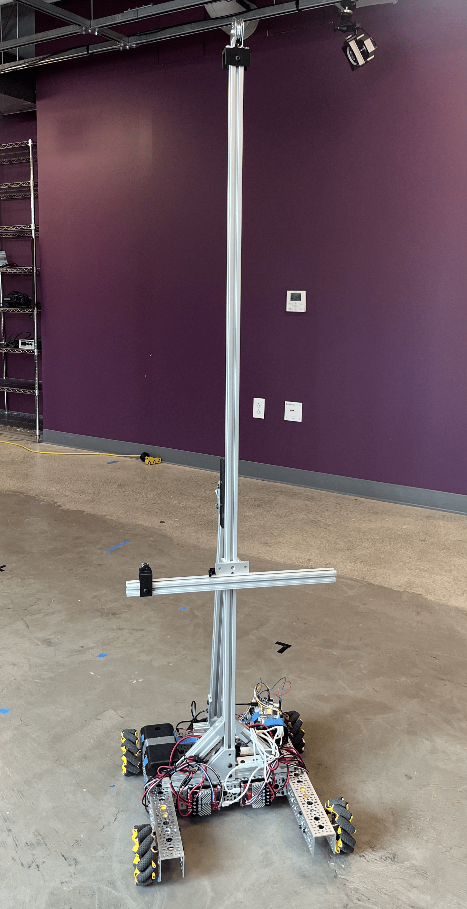

FlowBot: Automated 3D Traverse Robot
01 The problem
- Measuring the wake of a lab-scale wind turbine using hot-wire anemometry requires sub-centimeter accuracy and hundres of points.
- Manual positioning is too labor intensive and prone to error.
02 My approach
- Engineer a robot to autmoate sensor movement through a programmed points path in 3D.
- Robot must self-correct for yaw misalignment to ensure accurate sensor readings.
- Robot needs to be stable while experiencing 10m/s winds in the wind tunnel.
03 Process
Hardware
- Built a mecanum chassis base for XY movement.
- Designed a custom vertical linear actuator from a stepper motor, string, and pulley. It is lightweight and cost under $200.
- Constructed the frame mainly from 80/20 aluminum extrusions.
- Designed and 3D-printed custom components in CAD to mount the stepper motor and integrate the actuator into the frame.
Software & Controls
- Programmed movement for the mecanum base and linear actuator in Python on a Raspberry Pi.
- Used NatNet to wirelessly stream position data from the OptiTrack motion capture system.
- Implemented a PID control loop to drive the robot to target positions using OptiTrack feedback.
- Integrated the Pi with LabVIEW so the traverse could plug into the larger wind turbine wake experiment.
- Diagnosed and debugged a data buffer overflow caused by connecting the Pi to LabVIEW and OptiTrack at the same time.
Safety
- Built two independent emergency-stop layers: one on the Raspberry Pi and one in LabVIEW.
04 Results
- Achieved 6mm precision and 1mm accuracy.
- Automated 30+ hours of wind tunnel experiments.
- Presenting research from this data at APS Division of Fluid Dynamics conference in Nov 2026.
